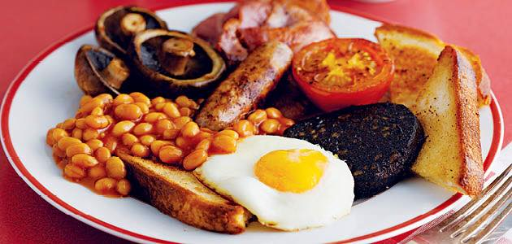

All Day Breakfast

Description:
Enjoy making this British classic that makes a great start to the day!
Ingredients
- Cooking Oil
- Beans (Branston is best! Screw Heinz!)
- Sausages of your choice (Richmond's are quite nice)
- Bacon (Smoked stuff if you like!)
- Hash Browns
- Black Pudding
- Tin of Chopped Tomatoes
- Bread
- Optional: Mushrooms (yuck)
- Optional: Eggs (yuck)
Steps
- Preheat oven to 180°C.
- Empty the beans and tomatoes into separate pans and put under low heat.
- Put sausages, hash browns and black pudding in to (a) tray(s) and place in oven.
- Wet a pan with cooking oil and fry the Bacon. Crispy is best!
- Put the bread in the toaster and toast it.
- Optionally do the eggs and mushrooms - I'm sure you can work those out.
- Assemble everything on to a plate and enjoy!